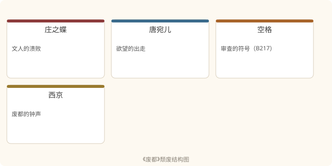

废都
一、基本信息
| 作者 | 贾平凹 |
|---|---|
| 成书/出版 | 1993年出版（英文维基 B217：Ruined City，1993；北京出版社说待核）；1994年遭禁、2009年解禁（B217） Jia Pingwa — Wikipedia (EN)（百科全书） |
| 国别/地区 | 中国 |
| 时代 | 现当代 · 当代 |
| 体裁 | 长篇小说 |
| 语言 | 汉语（白话） |

《废都》颓废结构图（主题·结构图）
二、创作背景
英文维基（B217）：'frank depictions of various sexual acts……earned the book both a wide audience and a 17-year ban from the authorities, causing it to become one of the most pirated books in modern Chinese literature'（直白性描写使其读者广泛却被禁17年、成为现代中国被盗版最多的书之一）；'By 2009……the book was unbanned'（2009年解禁）。
文学史（B217）：与《金瓶梅》比较的世情书写；'empty blocks'（空格）的删改符号——出版史奇观。
三、内容脉络
西京文人庄之蝶与四段情事：唐宛儿、柳月、阿灿等（通说待核）。
'废'都意象：西京的没落与文人的颓唐（通说）。
结尾：庄之蝶车站中风——'废都'之废（通说待核）。
四、主要人物表
| 人物 | 身份 | 说明 |
|---|---|---|
| 庄之蝶 | 文人 | 四大闲人之首（通说待核） |
| 唐宛儿 | 少妇 | 欲望与出走（通说待核） |
| 牛月清 | 妻子 | 传统的妻子（通说待核） |
五、主题与艺术特点
- 文人的精神溃败（通说）。
- 性描写与出版审查：空格的历史（B217）。
- 西京（西安）的古都颓败（通说）。
六、影响与评论
- 英文维基：1993年出版后被禁17年、2009年解禁；'one of the most pirated books in modern Chinese literature'（B217）。
Jia Pingwa — Wikipedia (EN)（百科全书） - 英文维基：1997年法国费米娜外国小说奖（La Capitale déchue）（B217 奖项列表）。
Jia Pingwa — Wikipedia (EN)（百科全书）
七、阅读建议
难点
- 空格的阅读伦理。
- 1990年代人文精神讨论背景。
- 《废都》（北京出版社1993初版说——待核；2009年再版）。
对照《秦腔》：贾平凹的两个十年。
八、待核实
- 初版出版社（北京出版社说）核对。
- '□□□□'空格的字符数与说明待核。
- 1997年费米娜奖（B217 已载）核对。
本页主要来源
贾平凹的其他收录作品：秦腔